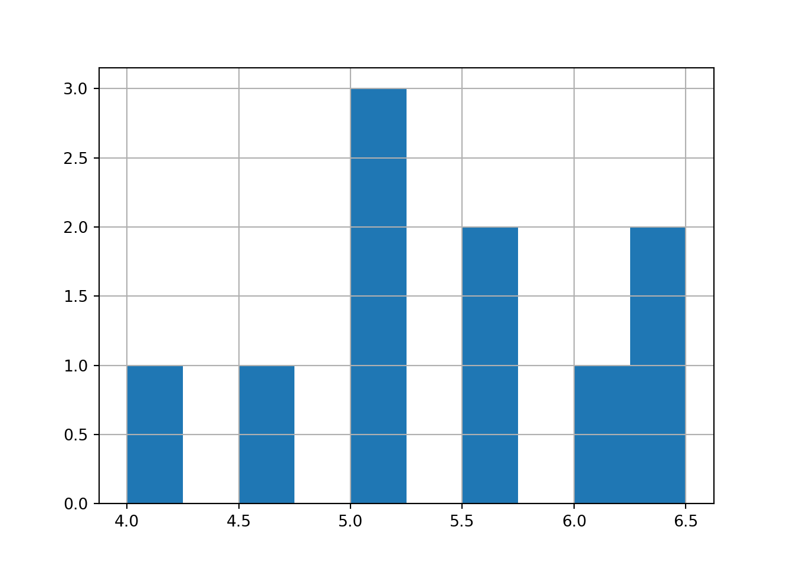

1B. Coding in Python
Welcome to Posit Cloud! You made it! This document will introduce you to how to start coding in Python using Posit Cloud. We will use the Python language frequently to conduct analyses and visualization.
Hello world! We are coding in Python!
Getting Started

1.9 Introduction to Python
Your project includes a Python script file (its name ends in .py). It contains two kinds of text:
- code - instructions to our calculator
- comments - any text that immediately follows a
#sign
Notice: the IDE has four panes, including the editor, console, environment/history, and files. The console shows outputs from Python (or R).
To create a new script, go to File >> New File >> Text File (or Python Script), then save it and name it.

(#fig:image_py_1_1)Open New Script

(#fig:image_py_1_2)Save New Script as a .py file!
Let’s learn to use Python!
1.10 Basic Calculations in Python
Try highlighting the following and pressing Ctrl+Enter, or click Run.
Addition:
## 6Subtraction:
## 3Multiplication:
## 6Division:
## 3.0Exponents:
## 4Square roots:
## 4.0Order of operations still applies. Use parentheses to control order:
## -1## -6
Learning Check 1
Question
Try calculating something wild in Python! Solve for x below using the commands above.
- \(x = \sqrt{ (\frac{2 - 5}{5})^{4} }\)
- \(x = (1 - 7)^{2} \times 5 - \sqrt{49}\)
- \(x = 2^{2} + 2^{2} \times 2^{2} - 2^{2} \div 2^{2}\)
[View Answer!]
## 0.1296## 0.36## 173.0## 19.0
1.11 Types of Values in Python
Python commonly uses numeric values and character strings.
## 15000## 0.0005## -8222and
## 'Coding!'## 'Corgis!'## 'Coffee!'
1.12 Types of Data in Python
1.12.1 Values and Variables
Save a value as a named variable in memory.
## 2## 'x'## 2Do operations too!
## 4Overwrite variables as needed.
## 'I overwrote it!'Remove variables from memory if needed.
1.12.2 Lists (like R vectors)
Lists hold multiple values.
## [1, 4, 8]and
## ['Boston', 'New York', 'Los Angeles']Python will coerce types inside a list only if you mix them when converting to arrays or series. Keep types consistent when possible.
Do math element-wise using pandas Series:
1.12.3 DataFrames with pandas
Bundle columns into a table using pandas DataFrame.
import pandas as p
myheights = [4, 4.5, 5, 5, 5, 5.5, 5.5, 6, 6.5, 6.5]
mytowns = ["Gloucester", "Newburyport", "Provincetown",
"Plymouth", "Marblehead", "Chatham", "Salem",
"Ipswich", "Falmouth", "Boston"]
myyears = [1990, 1980, 1970, 1930, 1975, 1975, 1980, 1920, 1995, 2000]
sw = p.DataFrame({
'height': myheights,
'town': mytowns,
'year': myyears
})
swAccess a column (Series) with dot or bracket notation and do operations.
Update values as needed.
Learning Check 2
Question
How would you make your own DataFrame? Make a DataFrame with 3 columns and 4 rows. Make 1 numeric column and 2 character columns. How many rows are in that DataFrame?
[View Answer!]
1.13 Common Functions in Python
We can compute descriptive statistics using pandas Series methods.
1.14 Missing Data
Sometimes data include missing values. In pandas these are NaN. Many pandas functions ignore NaN by default.
## np.float64(5.35)If you need to include missing values in a calculation, convert them or use numpy functions explicitly, but usually skipping them is desired.
Learning Check 3
Question
Recreate the table below as a pandas DataFrame named jp, then answer the questions.
| town | seawall_m | wave_m |
|---|---|---|
| Kuji South | 12.0 | 14.5 |
| Fudai | 15.5 | 18.4 |
| Taro | 13.7 | 16.3 |
| Miyako | 8.5 | 11.8 |
| Yamada | 6.6 | 10.9 |
| Ohtsuchi | 6.4 | 15.1 |
| Tohni | 11.8 | 21.0 |
| Yoshihama | 14.3 | 17.2 |
| Hirota | 6.5 | 18.3 |
| Karakuwa East | 6.1 | 14.4 |
| Onagawa | 5.8 | 18.0 |
| Souma | 6.2 | 14.5 |
| Nakoso | 6.2 | 7.7 |
- Reproduce this table as a DataFrame named
jp. - How much greater was the mean tsunami height than the mean seawall height?
- Which varied more across towns: seawall height or tsunami height? By how much?
[View Answer!]
import pandas as p
jp = p.DataFrame({
'town': ["Kuji South", "Fudai", "Taro", "Miyako", "Yamada", "Ohtsuchi", "Tohni",
"Yoshihama", "Hirota", "Karakuwa East", "Onagawa", "Souma", "Nakoso"],
'seawall_m': [12.0, 15.5, 13.7, 8.5, 6.6, 6.4, 11.8, 14.3, 6.5, 6.1, 5.8, 6.2, 6.2],
'wave_m': [14.5, 18.4, 16.3, 11.8, 10.9, 15.1, 21.0, 17.2, 18.3, 14.4, 18.0, 14.5, 7.7]
})
jp
The Pipeline
In Python we can use dfply’s pipeline operator >> to connect data to functions. This reduces parentheses and keeps sequences readable. But it is not as usable as the pipe operator in R. It can only pipe dataframes to common dfply / dplyr functions like select, mutate, summarize, etc.
from dfply import *
sw >> select(X.height)
sw >> mutate(y = X.height ** X.height)
sw >> summarize(mean_value = mean(X.height))
1.16 Visualizing Data with Histograms
We can visualize with matplotlib/pandas, or use plotnine (a Python port of R’s ggplot2) to develope detailed, customized visuals.
1.16.2 geom_histogram() in plotnine
from plotnine import *
(ggplot(allsw, aes(x='height')) +
geom_histogram(color="white", fill="steelblue", binwidth=0.5) +
labs(x="Seawall Height", y="Frequency (# of cities)"))Facet by state:
(ggplot(allsw, aes(x='height')) +
geom_histogram(color="white", fill="steelblue", binwidth=0.5) +
labs(x="Seawall Height", y="Frequency (# of cities)") +
facet_wrap('~states'))
Learning Check 4
Question
Using a list named sw, draw a histogram of the seawall heights: 4.5, 5, 5.5, 5, 5.5, 6.5, 6.5, 6, 5, 4. Use pandas or plotnine.
[View Answer!]

Learning Check 5
Question
Make a histogram of jp['seawall_m'] from Learning Check 3 using (1) pandas and (2) plotnine.
Conclusion
Next Steps
We’ll keep building skills:
- working with data types in Python
- calculating meaningful statistics in Python
- visualizing meaningful trends in Python